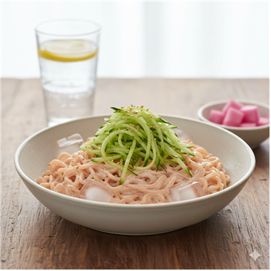

불닭 요거트 콜드누들

🍝 소개
얼음물 목욕한 불닭면에 요거트·마요 고소폭탄 소스 입히고 오이채 샤라락 얹어 시원하고 미친 매콤함 발사!
🧾 재료 (1인분 기준)
불닭볶음면
플레인 요거트
마요네즈
오이채
👩🍳 조리 방법
1. 끓는 물에 면을 삶아 얼음물에 식힌다. 2. 불닭소스와 요거트, 마요네즈를 섞어 차갑고 고소한 소스를 만든다. 3. 면과 소스를 섞고 오이채를 올린다.
← 메인으로 돌아가기
🍳 다른 레시피 보기